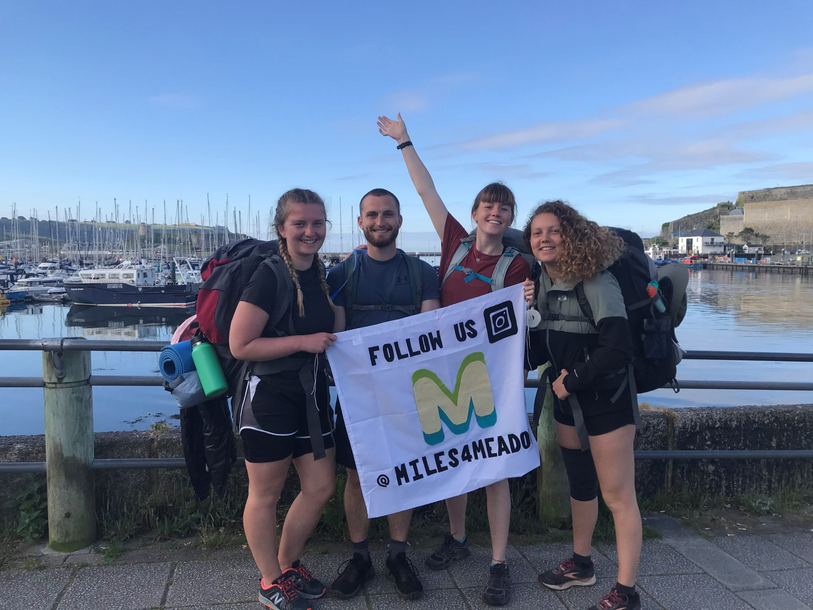

SO...HOW DO WE
MAKE A CHANGE
5 BASIC Things You Can Do
Do Not Dispose of Oils in the Sink
When the oil mixes with water,
it imbalances the water properties and makes it hard for consumption.
So, the next time you think of dumping that excess oil,
grease or fat into the sink, take a step back and put it in the dustbin instead.
Reduce the Usage of Plastics
80% of the plastics present in the oceans are from the lands.
This massive amount of plastics getting dumped in the ocean
is making our water unfit to drink. Also, it causes severe harm to
aquatic life and is the major reason for many sea animals to become extinct.
So, if we can reduce the usage of plastics at our home,
we can do a small part in saving the water as well as the aquatic lives.
We can start by reusing the plastic items we have in the home instead of disposing of it.
The next time you’re planning to buy a plastic item, look for similar alternatives
made of wood or any other sustainable material.
Let’s begin today by cutting down the usage of plastic and making our home plastic-free soon.
Minimize the Usage of Water
Now that we know how precious water is let’s conserve water as much as possible.
Here are a few things we can do:
1. Run the dishwasher only when it’s full.
2. Use minimum detergent for rinsing.
3. Reduce the usage of water per flush by installing a water-efficient toilet.
4. Turn off taps when it’s not in use, even if it’s just for a few seconds.
Don’t Dispose of Household Chemicals or Drugs with Water
We tend to dispose of the old medications and drugs and household chemicals in the sink or the toilet. This is again a form of chemical water pollution. Instead, you can approach the local bodies about hazardous waste collection and dispose of the chemicals properly. Similarly, the pills and medications should be disposed of with solid waste.
Don’t Throw Clothes and Tissues in the Toilet
The household items like clothes, dental floss, tissues, wrappers and other papers are usually disposed of in the toilet in many houses. While it’s okay to flush the toilet paper as it breaks down easily in water, other such fibrous materials tend to pollute the water and can stay in the water for a very long time. *Use proper solid waste management practices to dispose of this stuff.
UPCOMING EVENTS
Sport and Conservation
1 August 2021
Sound National Marine Park
We are proud to announce that we are partnering
with the world class SailGP to host a series of
exciting free activities and experiences for all to enjoy
ahead and during what is widely regarded as one of
the world’s most impressive sailing races.
Charity Challenge for Seagrass Restoration
15 August 2021
South West Coast Path
124 kilometre walk along the South West Coast
Path to raise funds for Ocean Conservation
Trust’s seagrass restoration work.
World Ocean Day 2021
8 August 2021
Mount Batten Beach
At the Ocean Conservation Trust we LOVE World Ocean Day.
At the very least it’s a chance for us to take a step back
and just appreciate how amazing the Ocean really is.
But, not only that, it’s a chance for our charity to get
involved in lots of amazing different projects & events,
and gives us a chance to celebrate our Ocean conservation work!

Ocean Conversations

15 August 2021
via Zoom
Join the Ocean Conservation Trust as we bring together
scientists from Galapagos Conservation Trust (GCT)
to discover the wonders of the Galapagos Marine Reserve,
home to a plethora of unique marine species.
Galapagos Conservation Trust is working to protect the Marine
Reserve and the surrounding ocean against threats from climate change,
overfishing and plastic pollution
Everyone, everywhere can make a
positive difference and together, create a
healthy Ocean for all. Whoever you are,
from individuals to communities,
industry to govermment,
the time to change is now.